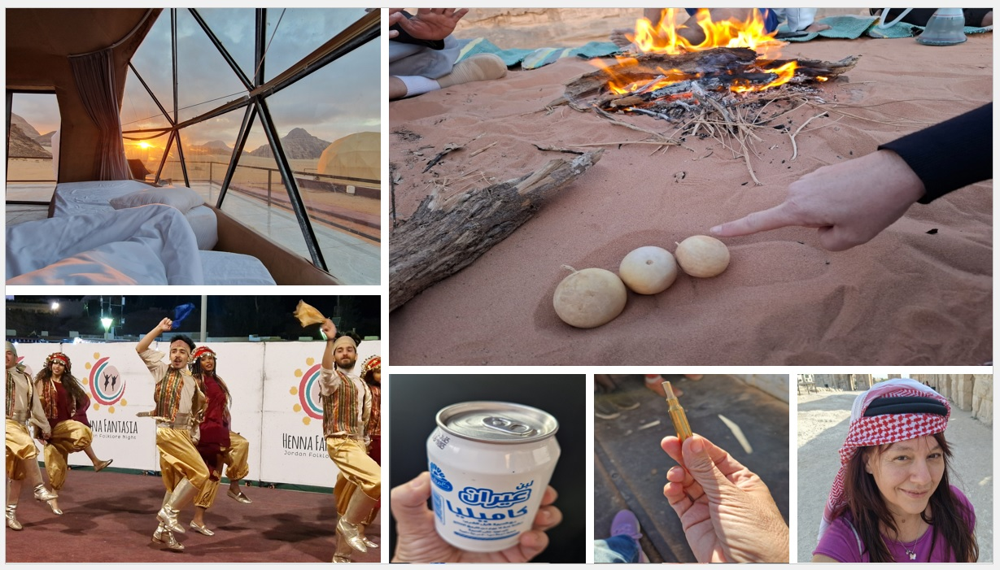

Jordan je bio čarolija. Ali i lekcija.
Neke stvari smo naučile na teži način: kroz hladne noći, loše hotele i preslane doručke.
Evo šta bismo danas uradile drugačije.
1. Opasne "zvečke" u pustinji Wadi Rum
Greška: Sakupljanje nepoznatih plodova biljaka.
Šta se desilo: Prijateljica je našla zanimljive okrugle plodove koji zveckaju, da bi joj beduin kasnije objasnio da su veoma otrovni i da mora dobro oprati ruke.
2. Potcjenjivanje hladnoće u pustinji
Greška: Odlazak u pustinju bez dovoljno tople odjeće (iako smo nosile jakne, ipak smo se smrzle).
Šta se desilo: Pustinjski vjetar i noćne temperature su nas iznenadile čak i u zimskim jaknama i maramama.
3. Gledanje samo zalaska sunca u pustinji
Greška: Ne probuditi se i za izlazak sunca.
Šta se desilo: Izlazak sunca je takođe potpuno magičan, navijte sebi sat. Mi smo imale sreće da smo se slučajno probudile.
4. Suveniri kao "bezbednosni rizik" na aerodromu
Greška: Sakupljanje čaura metaka kao uspomena iz pustinje.
Šta se desilo: Tokom vožnje vozom kroz pustinju prisustvovale smo prikazu Velikog arapskog ustanka gde su se koristili meci. Pronašle smo čaure u vagonu, ali nam je naglašeno da se one nipošto ne smeju nositi na aerodrom jer bi to izazvalo ozbiljne probleme sa obezbeđenjem.
5. "Muška" marama u Džerašu (Modni promašaj)
Greška: Kupovina tradicionalnog crnog konopca (agal) koji ide preko marame.
Šta se desilo: Prodavac me je ubedio da kupim konopac, a kasnije sam saznala da njega u Jordanu nose isključivo muškarci. Rezultat su fotografije na kojima sam "obučena kao beduinski ratnik, a ne kao princeza".
6. Finansijski previd: Cenkanje koje to nije
Greška: Previsoka cena plaćena u Džerašu.
Šta se desilo: Bila sam ponosna što sam spustila cenu marame sa 15 na 10 joda, da bi kasnije u Petri saznala da te iste marame koštaju 4-5 joda.
7. Propusti u Petri (Vreme i logistika)
Iako je posjeta Petri bila magična, bilo je nekoliko ključnih grešaka u koracima:
Zadržavanje na ulazu: Zbog gledanja nacionalnog plesa i kupovine u prodavnicama na ulazu, zamalo smo zakasnile na glavni noćni multimedijalni šou koji počinje u tačno određeno vrijeme i traje relativno kratko.
Ambiciozni planovi bez odmora: Plan da se nakon cjelodnevnog pješačenja po Petri (800 stepenica) uveče obiđe i Mala Petra, a ujutru ide na solo "me time" fotografisanje, propao je zbog potpunog iscrpljenja i kiše.
8. Greška s "jogurtom" (Gastronomski nesporazum)
Greška: Kupovina slanog jogurta za doručak uz ovsene pahuljice.
Šta se desilo: Ono što se prodaje kao jogurt (često i u konzervama) je zapravo ajran (slan i kiselkast napitak). Pokušaj da se on jede sa pahuljicama sigurno nije bio najukusniji doručak.
9. Prvi smještaj u Amanu (Loš hotel)
Greška: Odabir najjeftinijeg smeštaja.
Šta se desilo: Naišle smo na užasan smeštaj (izlizani tepisi, plafon koji se ljušti), pa smo morale na licu mjesta tražiti drugi hotel (srećom, Khan Khediwe je bio pun pogodak).
10. Nepoznavanje pravila plivanja u Mrtvom moru
Greška: Pokušaj plivanja "na stomaku".
Šta se desilo: U Mrtvom moru je zbog saliniteta nemoguće plivati klasično. Čim legneš na stomak, more ti izbaci noge gore, a glava krene da tone, što je dovelo do izuma mog prskajućeg "psećeg stila" i plivanja postrance.
